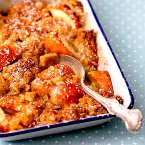

Crunchy Apple Pie

Description
Sweet and crunchy apple pie.
Ingredients
- 150 g butter
- 2 dl unrefined sugar
- 0.5 dl golden syrup
- 0.5 dl cream
- 3 dl rolled oats
- 1.5 dl flour
- 0.5 tsp baking soda
- 1 tsp flake salt
- 600 g apples
Steps
- Preheat oven to 200°C.
- Mix oats, flour, baking soda, and salt in a bowl.
- Melt butter, sugar, syrup, and cream in a pan.
- Remove the pan from the stove and mix in the oat mix.
- Slice the apples and spread out in a buttered pie form.
- Spread the mixture over the apples.
- Bake for 20 minutes or until the pie has a golden and crunchy crust.
- Serve with whipped cream or vanilla ice cream.